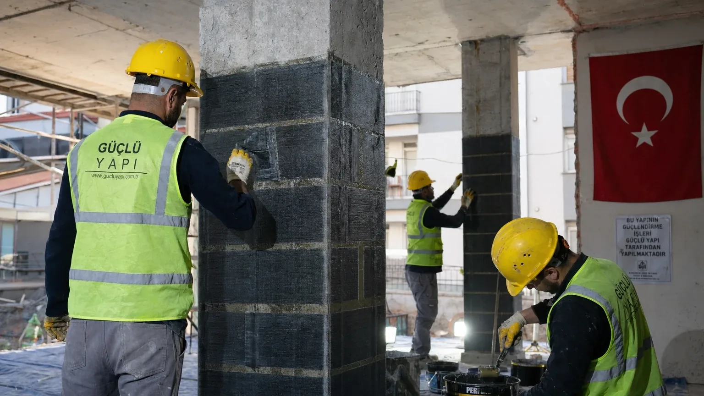
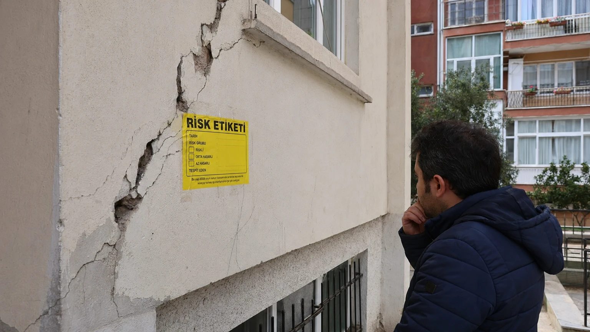
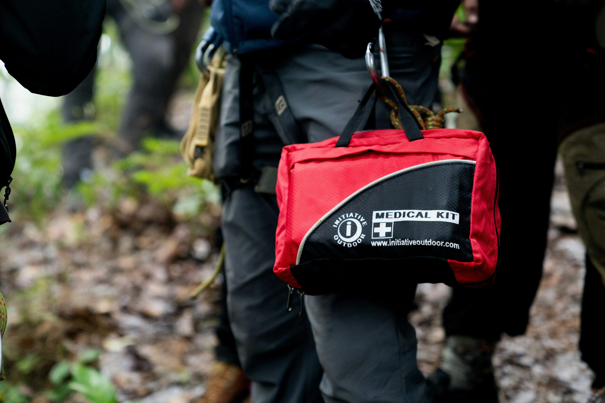
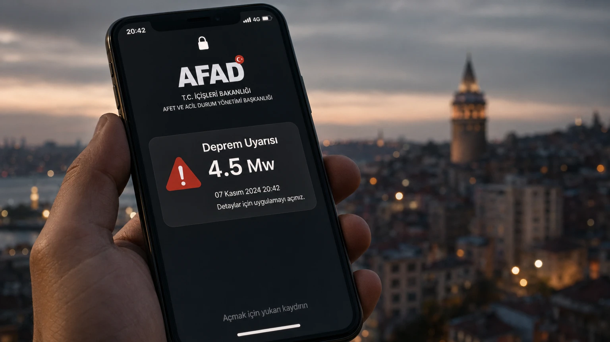
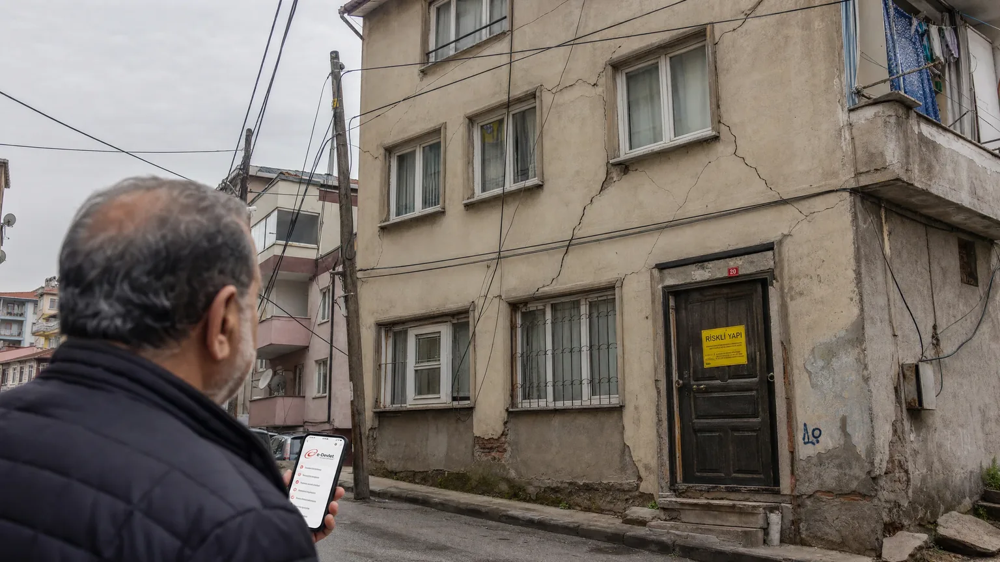
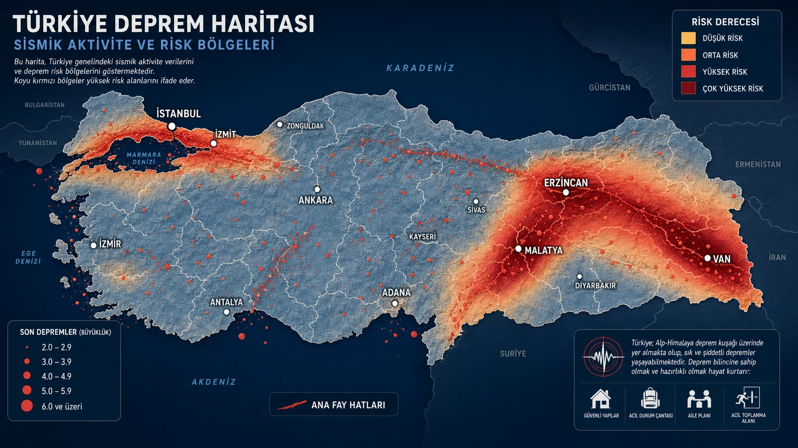

AFAD ve Kandilli Karşılaştırması 2026 — Hangi Veri Doğru?
AFAD vs Kandilli deprem verisi karşılaştırması: hız, doğruluk, magnitüd farkları, istasyon sayıları. Hangi kaynak hangi durumda kullanılmalı?

Aktif Deprem Haritası 2026 — Son 24 Saatte Türkiye'de Ne Oldu?
Aktif deprem haritası: son 24 saatte Türkiye'de gerçekleşen tüm depremlerin canlı haritası. Magnitüd, derinlik, fay aktivitesi ve günlük özet.

Az Önce Deprem Mi Oldu? Türkiye 2026 Hızlı Sorgulama
Az önce deprem mi oldu? Sarsıntı hissettiniz mi? AFAD ve Kandilli verisiyle 30 saniyede yanıt. Konum bazlı en son depremler, kontrol yöntemleri.

Bugün Deprem Oldu Mu Türkiye? 2026 Anlık Günlük Rapor
Bugün Türkiye'de deprem oldu mu? AFAD + Kandilli verisiyle günlük tüm depremler, hissedilen olaylar, bölge özetleri ve haftalık karşılaştırma.

Canlı Fay Hattı Haritası Türkiye 2026 — KAF, DAF, BAF
Canlı fay hattı haritası: Türkiye'nin 3 büyük fayı (KAF, DAF, BAF) ve son hareketleri. AFAD verisiyle aktif fay aktivitesi, segment riskleri.

Canlı Sismik Harita Türkiye 2026 — Anlık Aktivite Takibi
Canlı sismik harita: Türkiye'nin anlık sismik aktivitesini AFAD + Kandilli verisiyle 20 saniyede güncellenen interaktif haritada takip edin. Büyükl...

Deprem Haritası Nasıl Okunur? Türkiye Kapsamlı Rehber 2026
Deprem haritası okuma rehberi: renk kodları, fay hatları, derinlik göstergeleri, magnitüd skalası ve coğrafi koordinat sistemi. Adım adım örneklerle.

Dünya Deprem Haritası Canlı 2026 — Türkiye ile Karşılaştırma
Dünya deprem haritası canlı: küresel sismik aktivite, USGS verisi, dünyanın en aktif fay sistemleri ve Türkiye'nin küresel risk sıralamasındaki yeri.

Haritalı Son Depremler 2026 — Türkiye Canlı Liste + Görsel
Haritalı son depremler: AFAD + Kandilli verisiyle son depremleri hem listede hem haritada görüntüleyen kapsamlı canlı takip platformu.

Yakınımda Deprem Oldu Mu? Konum Bazlı Sorgulama 2026
Yakınımda deprem oldu mu? Konum bilginizle anlık deprem sorgulama, yakın depremler listesi, mesafe hesaplama ve bildirim ayarları rehberi.

1999 Marmara Depremi'nden 8 Hayati Ders — Bugün Hala Geçerli
17 Ağustos 1999 Marmara depremi: 17.480 can kaybı, KAF aktivitesi, yapı denetim çıkışı. 26 yıl sonra hala uygulanan ve uyarmamız gereken dersler.

Apartman Yöneticileri İçin Deprem Hazırlık Rehberi
Apartman yöneticisi olarak deprem öncesi ne yapmalısınız? Ortak alanlar, yangın güvenliği, kat malikleri iletişimi ve acil durum planı rehberi.

Artçı Deprem Nedir? Ne Kadar Sürer, Zararı Olur mu?
Artçı deprem nedir, neden olur, ne kadar sürer? Ana depremden sonra gelen artçıların büyüklüğü, süresi ve güvenlik önerileri hakkında detaylı rehber.

Bina Deprem Performans Raporu 2026 — Fiyat, Süreç, TBDY 2019
Bina deprem performans raporu nedir, nasıl alınır, fiyatı ne kadar? TBDY 2019 kapsamında zorunlu sürecin tam rehberi. Mühendis seçimi, doğrusal/lin...

Binanızı Depreme Karşı Güçlendirme – Yöntemler ve Maliyetler
Ev veya apartman güçlendirme nedir, nasıl yapılır? Karbon fiber, epoksi enjeksiyon, çelik manşon yöntemleri ve 2026 maliyet rehberi.

DASK Nedir? Zorunlu Deprem Sigortası 2026 — Fiyat ve Kapsam
DASK (Doğal Afet Sigortaları Kurumu) nedir, neleri kapsar, 2026 prim fiyatları, nasıl alınır? Zorunlu deprem sigortası tam rehber.

Deprem Anında Araç Kullanırken – Trafik Güvenliği
Deprem anında araçta iken ne yapmalı? Güvenli durma, köprü/tünel kaçınma, kapıları kilitleme ve tahliye stratejileri. Sürücüler için deprem güvenli...

Deprem Anında Asansörde Ne Yapmalı? Her Katta Güvenlik
Deprem sırasında asansörde kalırsanız ne yaparsınız? Asansör güvenliği, deprem modu ve kattan çıkış rehberi.

Deprem Anında Balkon Güvenli Mi? — Bilimsel Cevap
Deprem sırasında balkona çıkmak güvenli mi? Konsol balkonların yapısal davranışı, riskler, doğru tahliye stratejisi.

Deprem Anında Bina İçindeyseniz – Çök Kapan Tutun
Deprem anında bina içindeyken hayat kurtaran çök-kapan-tutun hareketi, güvenli alanlar, asansör ve merdiven kullanımı hakkında adım adım rehber.

Deprem Anında Dışarıdaysanız – Açık Alan Güvenliği
Deprem anında sokakta, parkta veya açık alanda ne yapmalı? Güvenli mesafe, düşen nesnelerden korunma ve tahliye rotaları hakkında detaylı rehber.

Deprem Anında Yataktaysanız Ne Yapmalısınız?
Gece uyku sırasında deprem başlarsa ne yapmalı? Yatakta kalın mı, kalkın mı? Karanlıkta ve pijama ile tahliye rehberi.

Deprem Büyüklük Ölçekleri: Richter, Moment ve MMI Farkı
Deprem büyüklük ölçekleri nelerdir? Richter ve Moment (Mw) büyüklüğü arasındaki fark, MMI şiddet ölçeği ve hasar tahminleri hakkında detaylı rehber.

Deprem Erken Uyarı Sistemi Nasıl Çalışır?
Deprem erken uyarı sistemi nedir, nasıl çalışır, Türkiye'de var mı? AFAD, ShakeAlert ve Japon sistemlerinin karşılaştırması.

Deprem Güvenlik Bilgileri – Hayat Kurtaran Önlemler
Deprem sırasında ve sonrasında güvenlik önlemleri: çök-kapan-tutun, tahliye kuralları, binada sabitleme ve afet güvenliği rehberi tek sayfada.

Deprem Haritası – Türkiye Risk Bölgeleri ve Fay Hatları
Türkiye deprem risk haritası, bölgesel risk seviyeleri, fay hatları (KAF, DAF, BAF) ve güvenli alanlar. Kendi bölgenizin risk profilini öğrenin.

Deprem Hasarı Tazminat Süreci – DASK ve Konut Sigortasından Nasıl A...
Deprem sonrası DASK ve konut sigortası tazminatı nasıl alınır? Başvuru adımları, eksper süreci, itiraz hakkı ve ödeme takibi rehberi.

Deprem Sigortası Prim Hesaplama 2026 — Detaylı Rehber
DASK ve ek deprem sigortası primi nasıl hesaplanır? Yapı türü, alan, deprem bölgesi etkisi. 2026 fiyat listeleri ve indirim fırsatları.

Deprem Sonrası Gıda Saklama ve Su Temini Rehberi 2026
Deprem sonrası 7 günlük gıda stoğu, su sterilizasyonu, raf ömrü, özel diyetler. Acil durum beslenme planı tam rehber.

Deprem Sonrası Kiracı Hakları 2026 — Kira, Tahliye, Tazminat
Deprem hasarı sonrası kiracı hakları: kira ödeme zorunluluğu var mı, tahliye süresi ne kadar, depozito ve tazminat süreci. Yasal dayanaklarıyla 202...

Deprem Sonrası Psikolojik Destek ve PTSD
Deprem sonrası yetişkin ve çocuklarda travma belirtileri, PTSD nedir, ne zaman psikoloğa gidilir? Aile içi destek önerileri.

Deprem Sonrası Psikolojik İlk Yardım (PİY) Rehberi 2026
Deprem travması nasıl atlatılır? DSÖ Psikolojik İlk Yardım modeli, çocuklarda ve yetişkinlerde uygulanması, profesyonel destek kaynakları.

Deprem Sonrası Temiz Su ve Gıda Güvenliği
Deprem sonrası su güvenli mi? Deprem sonrası ne yenmeli, su nasıl temizlenir? Şebeke suyu ve gıda güvenliği hakkında rehber.

Deprem Sonrası İlk 24 Saat – Kurtarma Planı
Deprem sonrası ilk 24 saatte yapılması gerekenler: güvenli tahliye, ilk yardım, iletişim, toplanma alanı ve artçılara karşı önlemler. Adım adım eyl...

Deprem ve Cep Telefonu: Doğrular ve Yanlışlar
Deprem sırasında ve sonrasında cep telefonu nasıl kullanılır? SMS mi arama mı? Batarya ekonomisi, baz istasyonu çökmesi ve iletişim önerileri.

Deprem Çantası Listesi 2026 – Hayat Kurtaran Malzemeler
Deprem çantasında olması gerekenler: 72 saatlik yaşam seti, yedek ilaç, su, belge kopyaları ve ekipman listesi. 2026 güncel deprem çantası rehberi.
Deprem Öncesi Hazırlık – Ev ve Aile Planı Rehberi
Deprem öncesi ev güvenliği, mobilya sabitleme, aile tahliye planı, acil iletişim ve kaçış rotası nasıl hazırlanır? Adım adım hazırlık rehberi.

Deprem İçin En İyi 5 Mobil Uygulama – Türkiye 2026
Türkiye'de deprem takibi için en iyi Android ve iOS uygulamaları: AFAD Acil, Kandilli, erken uyarı ve anlık deprem uygulamaları karşılaştırması.

Deprem İçin Mobilya Sabitleme – Adım Adım Rehber
Depremde en büyük ölüm nedenlerinden biri devrilen mobilyadır. Dolap, kitaplık, buzdolabı gibi ağır mobilyaları duvara nasıl sabitlersiniz? Pratik ...

E-Devlet ile Deprem Riski Sorgulama 2026 — Adım Adım
E-devlet üzerinden binanızın deprem riskini, kentsel dönüşüm durumunu ve DASK poliçesini nasıl sorgulayacağınızın 2026 rehberi.

Engelli Bireyler İçin Deprem Tahliye Planı
Tekerlekli sandalyeli, görme engelli, işitme engelli ve hareket kısıtlı bireyler için özel deprem hazırlık ve tahliye rehberi.

Eski Binalar Deprem Yönetmeliğine Uyum Sağlamalı mı? 2026
1975-2019 arası deprem yönetmeliklerinin tarihi. Eski binaların TBDY 2019 ile karşılaştırılması, güçlendirme zorunluluğu ve risk değerlendirmesi.

Evcil Hayvanlarla Deprem Planı Nasıl Yapılır?
Kedi, köpek, kuş ve diğer evcil hayvanlarınızla deprem hazırlığı. Taşıma çantası, yedek mama, kimlik künyesi ve tahliye önerileri.

Evim Depreme Dayanıklı mı? 7 Adımlık Test
Oturduğunuz evin deprem dayanıklılığını nasıl değerlendirirsiniz? Çatlaklar, kolon yapısı, yapım yılı ve daha fazlası için 7 adımlık kontrol listesi.

Kadınlar İçin Deprem Hazırlığı ve Güvenlik
Kadınlara özel deprem hazırlık rehberi: hamile ve emzikli anneler, bekar kadınlar için hijyen, güvenlik ve psikolojik destek önerileri.

Kahramanmaraş 6 Şubat Depremleri – Dersler ve Sonuçlar
6 Şubat 2023 Kahramanmaraş ikiz depremleri (Mw 7.8 + Mw 7.6) ne öğretti? 11 il, 50 bin kayıp ve yapı güvenliği dersleri.

Kentsel Dönüşümde Vergi Muafiyeti 2026 — Tam Rehber
6306 sayılı yasa kapsamında KDV, tapu harcı, gelir vergisi muafiyetleri. Kentsel dönüşümde hangi vergilerden muafsınız, 2026 güncel listesi.

Kolon Kesmenin Cezası 2026 — Hukuki Sorumluluk ve İhbar
Apartmanda kolon kesmek suç mu? TCK ve İmar Kanunu açısından cezai yaptırımlar, ihbar süreci, deprem sonrası tazminat hakları.

Komşu Binasının Deprem Riski Varsa Ne Yapmalı? — İhbar Rehberi
Komşu binası tehlikeli mi? Riskli yapı ihbarı nereye yapılır, süreç nasıl işler? Belediye, AFAD ve hukuki başvuru rehberi.

Konut Sigortası mı DASK mi? Fark ve Birlikte Almanın Önemi
Konut sigortası ile DASK arasındaki fark nedir? Hangisi hangi hasarı karşılar? 2026 fiyat karşılaştırması ve birlikte alma rehberi.

Okul ve İşyerinde Deprem Güvenliği – Tahliye Planı Rehberi
Okul, AVM, ofis, fabrika gibi çok kişili mekânlarda deprem sırasında güvenlik, tahliye ve toplanma planı hazırlama rehberi.

Son Dakika Deprem Haberleri – Bugünkü Son Depremler
Bugün olan son depremler ve son dakika deprem haberleri. Kandilli + AFAD verileriyle anlık güncellenen deprem listesi ve bölge bazında takip.

TBDY 2019 Nedir? Deprem Yönetmeliği Değişiklikleri
Türkiye Bina Deprem Yönetmeliği 2019 (TBDY) ne getirdi? 2007 yönetmeliği ile farkları, performans hedefleri ve yapı sahipleri için anlamı.

Türkiye Fay Hatları Haritası 2026 – KAF, DAF ve BAF
Türkiye'nin üç büyük fay hattı (Kuzey, Doğu ve Batı Anadolu) nerede geçer? Hangi iller risk altında? 2026 güncel fay hattı haritası ve bilimsel ver...

Türkiye'de En Çok Deprem Olan İller 2026 — Risk Sıralaması
Türkiye'nin en deprem riskli 20 ili: İstanbul, İzmir, Hatay, Kahramanmaraş... AFAD verileriyle sayısal risk haritası, KAF/DAF fay hatları ve son de...

Van Depremi 2011 – 15 Yıl Sonra Neler Öğrendik?
23 Ekim 2011 Van-Erciş Mw 7.2 depremi: 600+ can kaybı, Bayram Oteli hatırası, Doğu Anadolu'da soğuk kış ve dersler.

Yapı Denetim Raporu Nasıl Okunur?
Binanızın yapı denetim raporu hangi bölümleri içerir? Beton sınıfı, donatı kontrolü, iskan ruhsatı okuma rehberi ve kritik göstergeler.

Yaşlılar İçin Deprem Hazırlığı ve Güvenlik Rehberi
65 yaş üstü bireylerin deprem hazırlığı: ilaç yönetimi, evde güvenli düzenleme, tahliye planı ve aile iletişimi için detaylı rehber.

Zemin Etüdü Nedir? Deprem ve Yapı Güvenliğindeki Önemi
Zemin etüdü nedir, nasıl yapılır, raporu nasıl okunur? Depremde zeminin yapıyı nasıl etkilediği ve zemin analizi rehberi.

Çocuklara Deprem Nasıl Anlatılır? Yaşlara Göre Rehber
Çocuklara deprem konusunu anlatmak korkutmadan nasıl yapılır? 3-5, 6-9, 10-14 yaş gruplarına göre iletişim rehberi ve ebeveyn önerileri.

İstanbul Beklenen Deprem Ne Zaman? Bilim İnsanları Ne Diyor?
İstanbul'da beklenen büyük deprem için bilim insanlarının tahminleri, olasılık hesapları ve hazırlık önerileri. 2019-2026 araştırmalarının özeti.

İstanbul Deprem Haritası – Hangi İlçeler Riskli?
İstanbul'un 39 ilçesinin deprem risk haritası: Avcılar'dan Şile'ye kadar hangi bölge yüksek, hangisi orta risk taşıyor? Zemin + yapı analizi.

İzmir Deprem Tarihi – 2020 Samos'tan Bugüne
İzmir'de son 20 yılın önemli depremleri: 2020 Samos-İzmir, 1928 İzmir ve tarihi Ege sarsıntıları. Fay hattı + yapı + ders çıkarımları.

İşyerinde Deprem Tatbikatı Nasıl Yapılır?
İşyerleri için zorunlu deprem tatbikatı düzenleme rehberi. 6331 sayılı kanun ne diyor? Tatbikat aşamaları, personel eğitimi ve belgeler.

📍 Toplanma Alanı Sorgulama 2026 — E-Devlet, AFAD, Belediye
Yakınımdaki toplanma alanı nerede? E-devlet ve AFAD üzerinden 81 il için resmi toplanma alanlarını sorgulama rehberi. Adres bazlı arama ve harita.